| Cocada |
Se elaboran a base de coco rallado finamente con sabor de vainilla o limón, horneada. |
$15 |
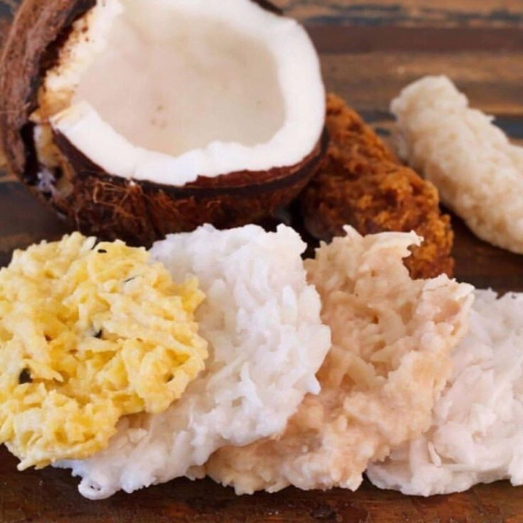
|
| Alegrías |
Son semillas de amaranto (cultivo prehispánico) tostadas, unidas por miel de azúcar y generalmente se decoran con nueces y/o pasas. |
$15 |

|
| Ate |
Elaborado con la pulpa del membrillo u otro fruto ya cocido, para después, cocinarlo a fuego directo con azúcar en cazos de cobre, hasta que empieza a desprenderse un dulce aroma y se torna transparente. |
$10 |
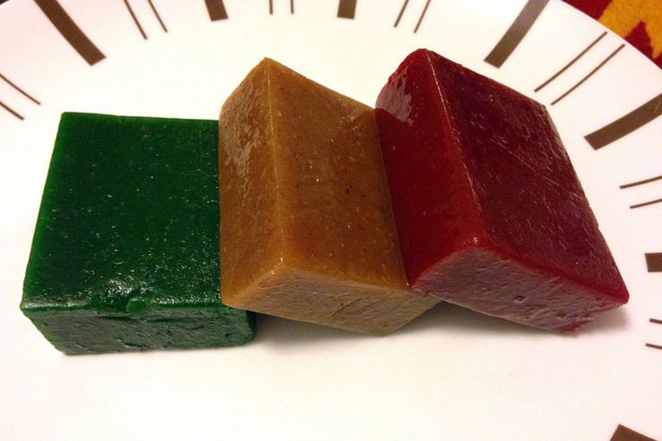
|
| Muéganos |
Hechos de miel con suave sabor anís y están cubiertos con una oblea. En otras regiones se preparan con harina de trigo. |
$20 |
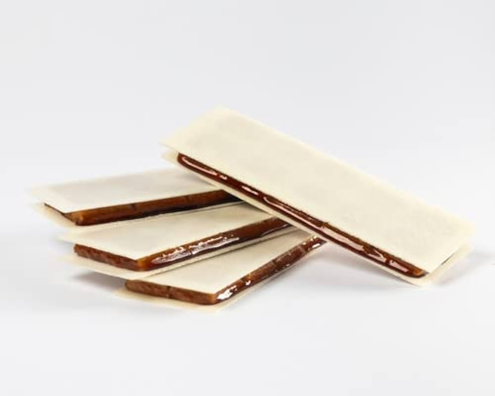
|
| Borrachitos |
Estos son dulces hechos de harina y espolvoreados con mucha azúcar y con un relleno cremoso de una gran gama de sabores; los principales son limón, piña, fresa, rompope y otros. |
$4 |
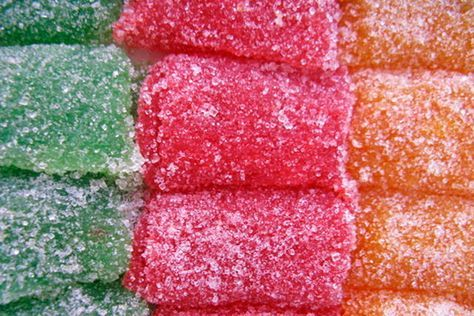
|
| Mazapanes |
Elaborados con almendras molidas y azúcar, estos dulces suaves y almendrados son una delicia irresistible. |
$10 |
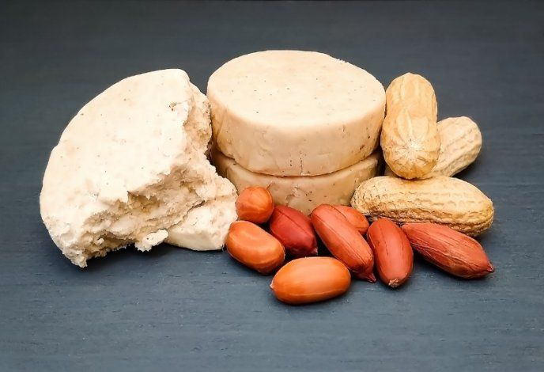
|
| Camotes |
Es un dulce preparado con azúcar, con esencia de distintos sabores y mezclados con agua para generar una pasta envueltos con papel encerado. |
$10 |
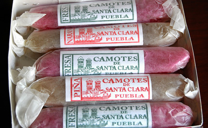
|
Nuez garapiñada |
La nuez garapiñada es una golosina con capa de azúcar caramelizada, cuya cubierta es crujiente por estar rodeada de dulce con nueces. |
$20 |
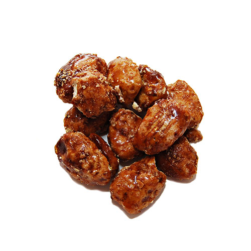
|
| Higos |
Su sabor característico se debe al caramelo que surge de la cocción de éstos con azúcar, con un sabor dulce pero semiamargo. |
$15 |
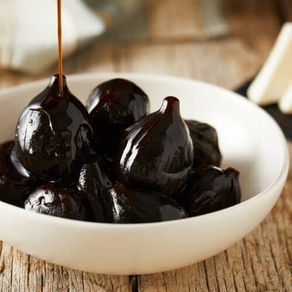
|
Merengues |
Los merengues son dulces que se preparan con claras de huevo y azúcar. Se preparan con claras de huevo, azúcar, fécula de maíz y esencia de vainilla. |
$4 |
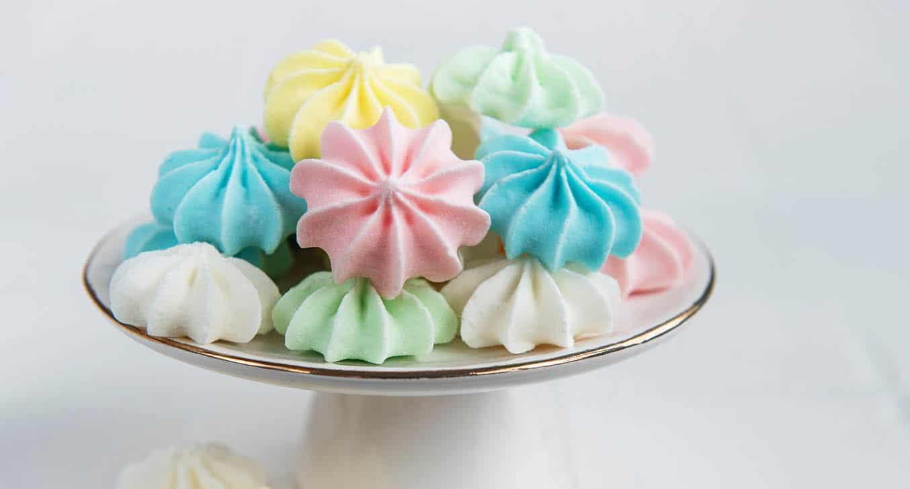
|
| Macarrones |
Los macarrones están elaborados de leche, son suaves, de forma alargada y color café claro. |
$5 |
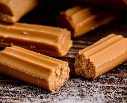
|
| Ollitas de tamarindo |
Este dulce está hecho a base de pulpa natural de tamarindo, si se quiere dulce se le agrega azúcar, y si se quiere salado se le agrega sal, chile en polvo y limón. |
$20 |

|
| Rollos de guayaba |
Estos se hacen con guayaba y harina. Tienen una consistencia suave y un delicioso sabor a fruta. |
$6 |

|
| Jamoncillo |
Está hecho a base de dulce de leche, semillas de calabaza y piñón. Los puedes encontrar en barras de colores rosa o blanco y con trozos de nuez. |
$5 |
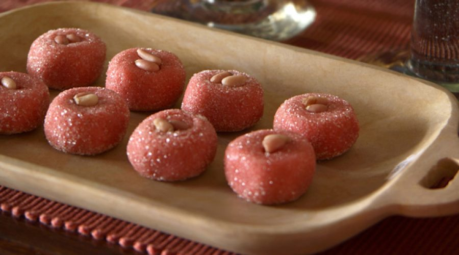
|